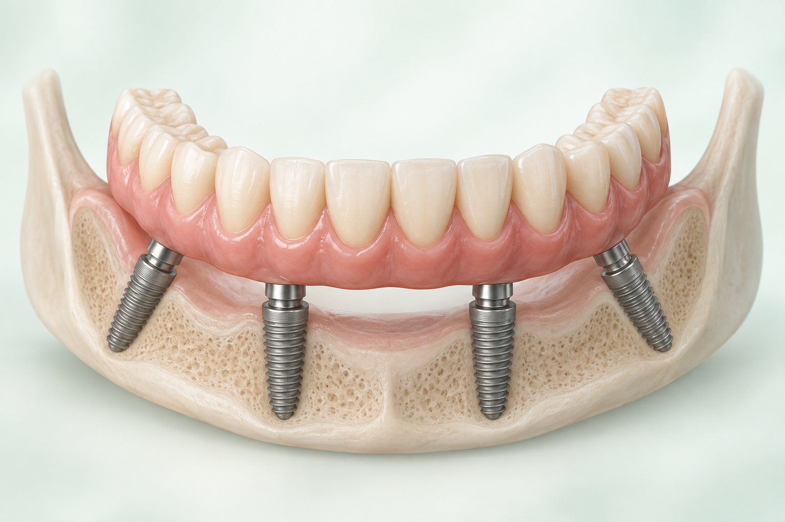
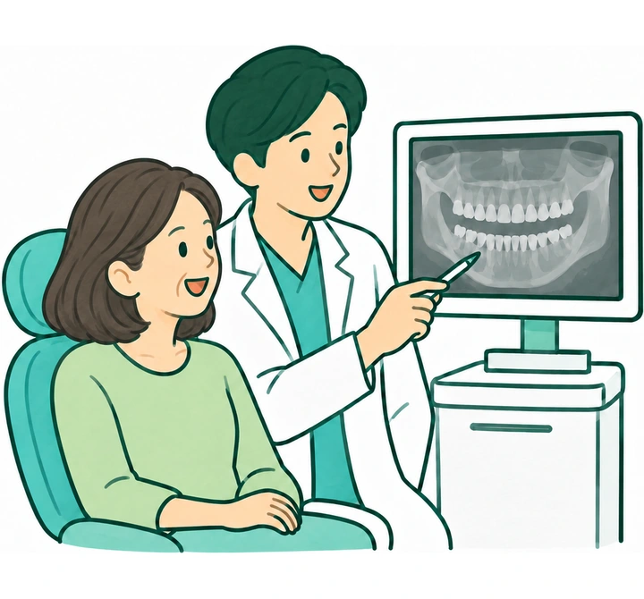
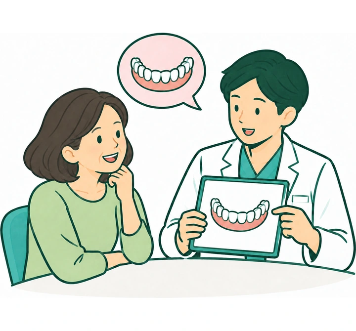
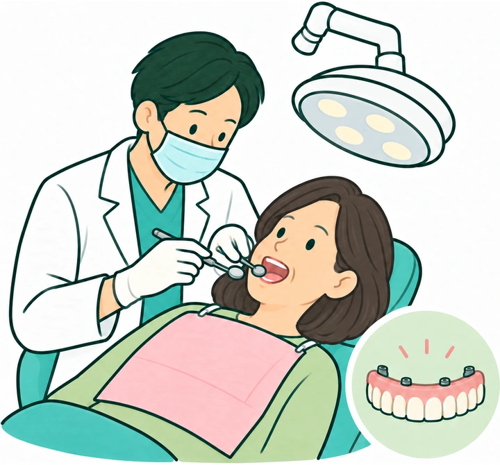
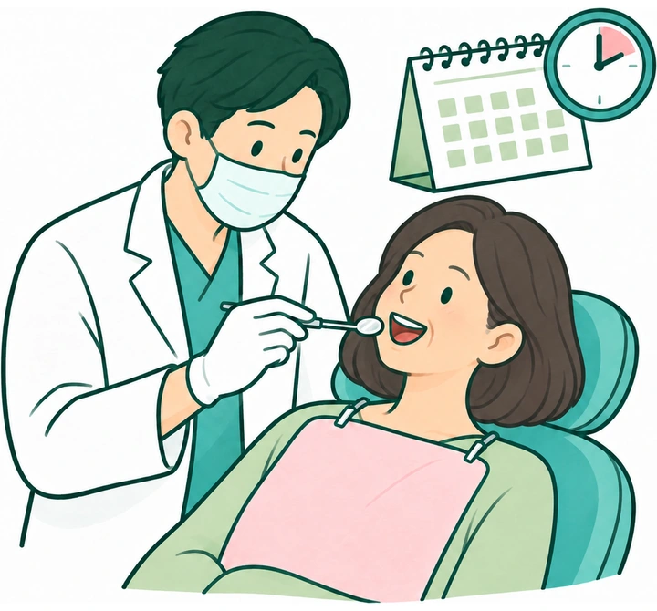
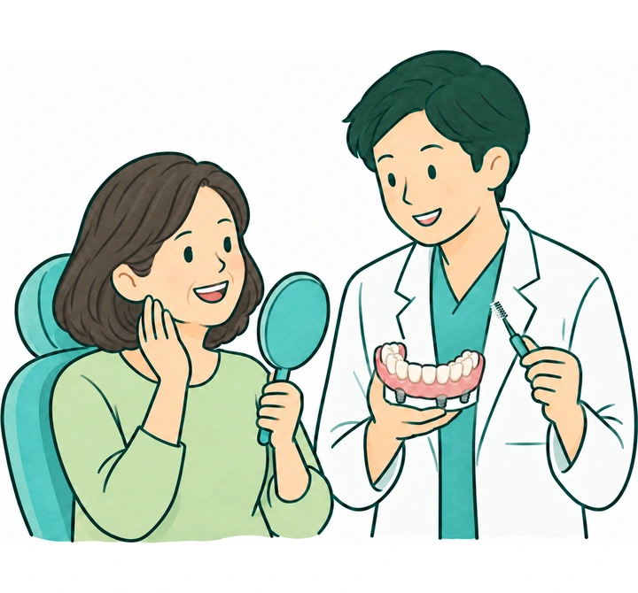
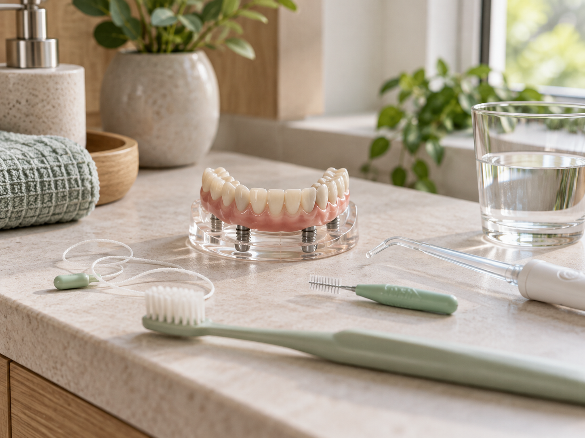

牙齒剩得不多
還能怎麼做
如果多數牙齒已經缺失，或剩下的牙齒狀況不好，可以先檢查口腔與骨質條件，再了解 All-on-4 或其他全口重建方式。
All-on-4 是什麼？
Full-Arch RestorationAll-on-4 是以四支植體支撐單顎固定式全口假牙的治療概念。後方植體常以特定角度配置，以運用現有骨質並支撐整體假牙；但「四支」不是所有人的固定答案，實際植體數量、位置與假牙設計仍需依骨質、咬合與全身健康規劃。
四支植體，支撐的是一整排固定式假牙
它和「缺一顆、植一顆」的概念不同。醫師需要從整體咬合、清潔空間、外觀與受力分布一起規劃。

植體支撐
植體位於齒槽骨內，作為全口假牙的支撐。
固定式假牙
上方假牙通常由醫師拆卸維護，不是患者每天自行取下。
臨時與正式假牙
臨時假牙與正式假牙的材料、功能和調整階段不同。
什麼情況下，會考慮 All-on-4？
Who May Consider It多數牙齒已缺失
單顎大範圍或全口缺牙，希望了解固定式重建選項者，可先接受完整評估。
剩餘牙齒狀況不佳
若多顆牙齒嚴重鬆動、蛀損或反覆發炎，醫師會先評估哪些牙齒仍可保留，再討論適合的重建方式。
活動假牙適應困難
若活動假牙容易鬆動、影響進食或配戴感受，可比較植體支持的固定式或活動式方案。
年紀不是唯一考量，身體和口腔狀況更重要
醫師會一起了解口腔是否發炎、牙周與骨質狀況、咬合、清潔能力，以及慢性病控制、抽菸和用藥情形。如果目前有急性發炎，或身體狀況還不穩定，通常會先處理，再討論後續治療。
開始之前，醫師會先檢查什麼？
Evaluation口腔與影像檢查
- 剩餘牙齒是否值得保留，以及感染狀況。
- 上下顎骨質、骨量與重要解剖構造位置。
- 上下顎關係、咬合空間與笑容外觀。
- 日後假牙下方是否有可清潔的空間。
健康與生活條件
- 慢性病控制、既往病史與目前用藥。
- 抽菸、磨牙與其他可能影響癒合或受力的習慣。
- 是否能配合術後飲食、清潔與回診。
- 對治療時間、預算與修復形式的期待。
很多人在意的，不只是把牙齒補起來
能不能比較自在地吃飯、和家人說話時不用一直擔心假牙鬆動，往往才是想改善的生活問題。治療規劃除了看影像，也需要了解平常的飲食、使用習慣與期待。
但剛完成手術與臨時假牙的階段，仍需依醫師指示調整飲食；照片呈現的是治療穩定後希望回到的日常，不代表術後立刻可以吃所有食物。
All-on-4 治療大致怎麼進行？
Treatment Process- 1.

完整檢查
確認牙齒、牙周、骨質、咬合、病史與重建需求。
- 2.

治療規劃
討論可保留牙齒、植體配置、假牙形式、風險與費用。
- 3.

手術與初期修復
依計畫處理患牙並放置植體；是否可裝臨時固定假牙需視初期穩定度判斷。
- 4.

癒合與調整
依組織癒合與咬合狀況回診，調整臨時假牙與飲食方式。
- 5.

正式假牙與維護
條件穩定後完成正式假牙，持續清潔、檢查與必要維修。
「當天有牙」不等於當天完成全部治療
部分患者在條件合適、植體初期穩定度足夠時，可能於手術後裝上臨時固定假牙；這仍是治療過程的一部分，需遵守飲食與回診指示。正式假牙通常要等組織穩定、咬合與外觀經過調整後再完成。
除了 All-on-4，還有哪些選擇？
Options| 方式 | 使用與清潔 | 需要考量 |
|---|---|---|
| All-on-4／固定式全口假牙 | 平時不自行取下，需清潔假牙下方與植體周圍，定期由牙科團隊檢查。 | 手術風險、植體受力、假牙維修、清潔能力與長期回診。 |
| 植體支持活動假牙 | 由植體增加穩定度，患者可取下清潔。 | 配戴感、附件耗損、取戴能力與假牙下方組織。 |
| 傳統全口活動假牙 | 每日取下清潔，不需植牙手術。 | 穩定度、異物感、咀嚼效率與齒槽骨變化。 |
固定式假牙不一定適合每個人。口腔與身體狀況、清潔方式、治療風險、費用和日後維修，都要一起考量。
裝上假牙後，平常要怎麼照顧？
Long-Term Care一整排固定假牙，下面仍需要清潔
牙刷通常無法獨立完成所有清潔。牙間刷、特殊牙線或沖牙機是否適合，以及應從哪個角度進入，要依假牙形態與口腔條件由牙科人員實際指導。
- 觀察植體周圍是否出血、腫脹或有異味。
- 定期檢查咬合、螺絲、假牙材料與清潔狀況。
- 若有鬆動、破損、疼痛或咬合改變，應儘早回診。

治療前應了解的限制與風險
Risk & Limits手術與癒合
可能出現疼痛、腫脹、出血、感染、骨整合不佳，或與鄰近解剖構造相關的風險。抽菸、牙周狀況、慢性病控制及部分用藥都可能影響癒合。
假牙與長期維護
假牙、螺絲或其他零件可能磨耗、鬆動或破損；植體周圍組織也可能發炎。All-on-4 不能保證永久使用，仍需日常清潔、定期回診與必要維修。
All-on-4 常見問題
FAQAll-on-4 一定只需要四支植體嗎？
All-on-4 指的是以四支植體支撐單顎全口假牙的治療概念，但不是每個人都適合固定四支。醫師會依骨質、咬合、重建範圍與風險決定植體數量與位置。
手術當天一定可以裝固定假牙嗎？
不一定。是否能採取即刻負重，需要看植體放置後的初期穩定度、骨質、咬合與整體風險；若條件不合適，可能採用其他過渡方式。
當天裝的是正式假牙嗎？
多數即刻修復情境先使用臨時假牙，讓組織癒合並觀察咬合與外觀，再於條件穩定後製作正式假牙。
骨頭不足也一定不用補骨嗎？
不能直接這樣判斷。傾斜植體有時能運用現有骨質，但是否需要其他處置仍取決於骨量、骨質、解剖位置與治療設計。
All-on-4 做完就能正常吃所有食物嗎？
初期通常要配合醫師指示調整飲食，避免讓尚在癒合的植體承受過大力量；之後也要依假牙與咬合狀況逐步調整。
全口固定假牙還需要洗牙和回診嗎？
需要。植體周圍仍可能累積牙菌斑並發炎，假牙與零件也需要檢查；回診頻率應依個人清潔、牙周與咬合狀況安排。
如果牙齒剩得不多，可以先來檢查看看。
醫師會先確認哪些牙齒還能保留，也會檢查骨質與身體狀況，再和你說明固定式或活動式假牙有哪些差別。
點我預約